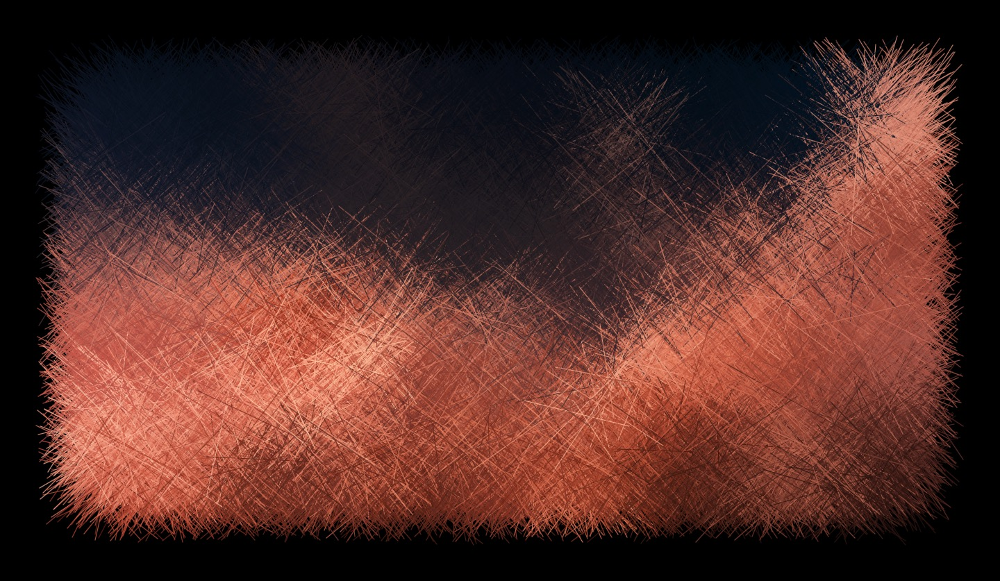
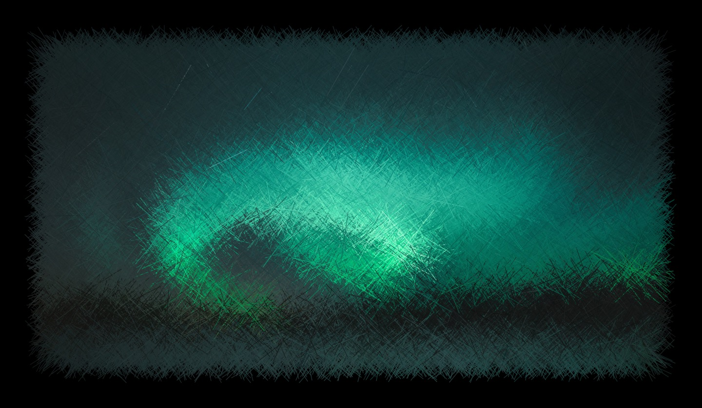

Line blurs
Home
Abstract images created from hundreds of thousands of lines. The images start off with a photograph. The underlying pixels are used to provide the colour for thousands of lines drawn at random angles.
Medium: Javascript
Line blur #2

Line blur #1

Line blur #3
Line blur #4